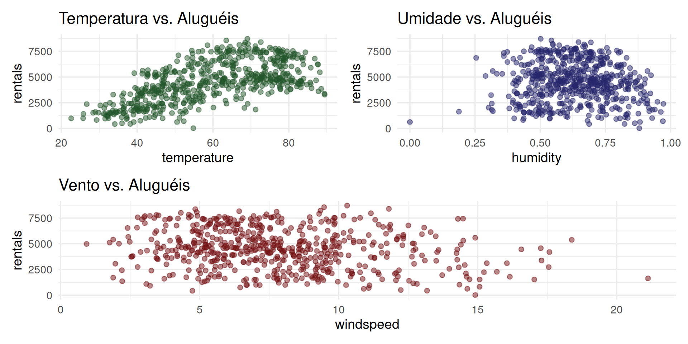
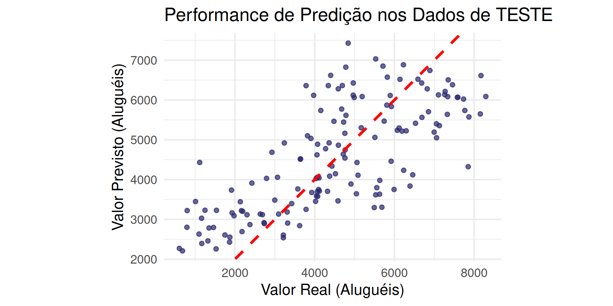

# Pacotes
library(tidyverse)
library(tidymodels) # Para dividir dados e métricas
library(patchwork) # Para juntar gráficos
# Carregando os dados
bikes <- read_csv("/home/sadraque/Documentos/UFS/Disciplinas/2025.2/mineracao de dados em estatistica/slides/08-regressao_linear/08-regressao_linear_exemplos/bikes.csv", col_types = "Dffffddddd")Regressão Linear
ESTAT0109 – Mineração de Dados em Estatística
Prof. Dr. Sadraque E. F. Lucena
sadraquelucena@academico.ufs.br
http://sadraquelucena.github.io/mineracao
Objetivo da Aula
- Distinguir Inferência de Predição e aplicar a Regressão Linear para modelar e prever uma variável contínua.
Panorama Geral de Mineração de Dados
Anteriormente exploramos o mundo Não Supervisionado:
- Objetivo: Encontrar estrutura escondida nos dados (Ex: K-means).
- Chave: Não tínhamos uma variável-resposta (Y).
Agora entraremos no mundo Supervisionado:
- Objetivo: Prever um valor-alvo (Y) com base em outras variáveis (X).
- A Grande Divisão:
- Regressão: O Y é um número contínuo.
- *Exemplo:** Prever a nota do IDEB, o valor do aluguel, a mortalidade infantil.
- Classificação: O Y é uma categoria/rótulo.
- Exemplo: Prever se um paciente tem COVID, se uma transação é fraude, se um aluno vai evadir o curso.
- Regressão: O Y é um número contínuo.
Problema: Aluguel de Bicicletas
Vamos usar a Regressão Linear para entender e prever o número de aluguéis de bicicleta (rentals) com base em condições climáticas.
- Variável resposta (Y):
rentals(numérica → Regressão) - Variáveis Preditoras (X):
temperature,humidity,windspeed.
Regra de Ouro da Aprendizagem Supervisionada
Nunca avalie seu modelo com os mesmos dados que você usou para treiná-lo.
- Overfitting (Superajuste): Ocorre quando o modelo “decora” os dados de treino, mas não sabe generalizar para dados novos.
- Analogia: É como um aluno que tira 10 na lista de exercícios (que ele decorou), mas tira 0 na prova (dados novos).
- Queremos um modelo que vá bem na prova, não que apenas decore a lista.
Solução: Partição Treino-Teste
Vamos dividir nossos dados aleatoriamente:
- Dados de Treino (~80%): A “lista de exercícios”. Usaremos para construir e inferir o modelo.
- Dados de Teste (~20%): A “prova surpresa”. Ficarão guardados e só serão usados uma única vez, no final, para avaliar a capacidade de predição do modelo.
Solução: Partição Treino-Teste
# Fixando a semente para reprodutibilidade
set.seed(123)
# Criando a partição com 'tidymodels'
# Usamos 'strata = rentals' para garantir que a distribuição de 'rentals'
# seja similar nos dois conjuntos (importante!)
bikes_split <- initial_split(bikes, prop = 0.80, strata = rentals)
# Extraindo os dataframes de treino e teste
bikes_treino <- training(bikes_split)
bikes_teste <- testing(bikes_split)
# Verificando os tamanhos
dim(bikes_treino)[1] 583 10[1] 148 10A Abordagem de “Dois Mundos”
A regressão linear pode ser usada para responder duas perguntas distintas:
Mundo 1: INFERÊNCIA (O Estatístico Clássico)
- Pergunta: Quais variáveis explicam os aluguéis?
- Ferramentas:
lm(),summary(),p-valores, \(R^2\), Análise de Resíduos. - Dados:
bikes_treino
Mundo 2: PREDIÇÃO (O Cientista de Dados/ML)
- Pergunta: Quão bem meu modelo prevê aluguéis em dias novos?
- Ferramentas:
predict(),RMSE,MAE. - Dados:
bikes_teste
Mundo 1: INFERÊNCIA (Explorando as Relações)
Primeiro, vamos explorar a correlação apenas nos dados de treino.
# Seus gráficos originais, agora aplicados aos dados de TREINO
p1 <- ggplot(bikes_treino, aes(x = temperature, y = rentals)) +
geom_point(color = "#22562a", size = 2, alpha = .5) +
theme_minimal(base_size = 14) +
labs(title = "Temperatura vs. Aluguéis")
p2 <- ggplot(bikes_treino, aes(x = humidity, y = rentals)) +
geom_point(color = "#27276d", size = 2, alpha = .5) +
theme_minimal(base_size = 14) +
labs(title = "Umidade vs. Aluguéis")
p3 <- ggplot(bikes_treino, aes(x = windspeed, y = rentals)) +
geom_point(color = "#741012", size = 2, alpha = .5) +
theme_minimal(base_size = 14) +
labs(title = "Vento vs. Aluguéis")
(p1 + p2) / p3Mundo 1: INFERÊNCIA (Explorando as Relações)
Insight: O gráfico Vento vs. Aluguéis mostra uma nuvem de pontos aparentemente aleatória. Se olhássemos só para ele, diríamos que windspeed (vento) não tem relação com rentals (aluguéis).
Mundo 1: Ajustando o Modelo Linear Múltiplo
Vamos ajustar nosso primeiro modelo de regresão linear múltipla usando a função lm() nos dados de treino.
\[ rentals = \beta_0 + \beta_1 temperature + \beta_2 humidity + \beta_3 windspeed + \varepsilon \]
O summary() é a principal ferramenta de inferência.
Mundo 1: Interpretando o summary()
Call:
lm(formula = rentals ~ temperature + humidity + windspeed, data = bikes_treino)
Residuals:
Min 1Q Median 3Q Max
-4545.5 -1108.7 -103.4 1076.1 3649.7
Coefficients:
Estimate Std. Error t value Pr(>|t|)
(Intercept) 2212.748 416.264 5.316 1.52e-07 ***
temperature 79.092 3.975 19.898 < 2e-16 ***
humidity -2626.091 433.640 -6.056 2.51e-09 ***
windspeed -95.367 19.655 -4.852 1.57e-06 ***
---
Signif. codes: 0 '***' 0.001 '**' 0.01 '*' 0.05 '.' 0.1 ' ' 1
Residual standard error: 1450 on 579 degrees of freedom
Multiple R-squared: 0.4406, Adjusted R-squared: 0.4377
F-statistic: 152 on 3 and 579 DF, p-value: < 2.2e-16Mundo 1: Interpretando o summary()
- Teste F (p-valor global): < 2.2e-16. O modelo como um todo é significativo (é melhor que um “chute” na média).
- Testes t (p-valores individuais):
temperature: Significativo (p-valor < 0.0001)humidity: Significativo (p-valor < 0.0001)windspeed: Significativo (p-valor < 0.0001)- Se houvesse variáveis não significativas, deveríamos removê-las do modelo e rodar novamente.
- Métricas de Ajuste:
- \(R^2\) Ajustado: 0.4377. Cerca de 43.77% da variabilidade dos aluguéis nos dados de treino é explicada pelo modelo.
Mundo 1: Interpretando o summary()
Insight: Este é um exemplo clássico de variável de confusão ou supressão. Sozinho, o vento não parece importar. Mas depois de controlarmos o efeito da temperature e humidity, o efeito real do vento aparece: com temperatura e umidade constantes, ventos mais fortes diminuem os aluguéis (coeficiente de -95.4). Isso mostra por que a Regressão Múltipla é mais poderosa que correlações simples.
Mundo 1: Diagnóstico (Validando as Suposições)
Para confiarmos nas nossas inferências (p-valores e intervalos de confiança), precisamos checar as suposições do modelo (análise de resíduos).
Observamos os gráficos:
**Resíduos vs. Valores Ajustados (Linearidade/Homocedasticidade):* A linha deve estar perto de zero e os pontos devem estar aleatórios.
Q-Q Plot (Normalidade dos Resíduos): Os pontos devem seguir a linha.
Scale-Location: Similar ao 1 (variância deve parecer constante).
Resíduos vs. Alavancagem (Pontos Influentes): Nenhuma Distância de Cook > 0.5 (sem pontos de grande influência).
Mundo 1: Diagnóstico (Validando as Suposições)
Conclusão do Mundo 1: O gráfico de resíduos vs. valores ajustados indica uma relação não linear entre os resíduos, violando a suposição de que os erros são independentes e aleatoriamente distribuídos. Podemos transofrmar a variável resposta ou usar um modelo diferente.
Mundo 2: PREDIÇÃO (A Hora da Verdade)
O modelo não é tão bom para explicar as relações entre as variáveis. Mas ele é bom para prever?
Vamos usar o modelo (treinado com bikes_treino) para fazer predições nos dados que ele nunca viu: bikes_teste.
Mundo 2: As Métricas de Predição (RMSE e MAE)
Não olhamos mais para \(R^2\) ou p-valor. Agora, medimos o erro da predição.
Usamos o pacote
yardstick(parte dotidymodels) para calcular as métricas no conjunto de teste.- RMSE (Root Mean Squared Error): O erro médio, na mesma unidade (
rentals). Ele penaliza erros grandes. Quanto menor, melhor. - MAE (Mean Absolute Error): O erro médio absoluto. Mais fácil de interpretar. Quanto menor, melhor.
- RMSE (Root Mean Squared Error): O erro médio, na mesma unidade (
Mundo 2: As Métricas de Predição (RMSE e MAE)
# A tibble: 1 × 3
.metric .estimator .estimate
<chr> <chr> <dbl>
1 rmse standard 1338.# A tibble: 1 × 3
.metric .estimator .estimate
<chr> <chr> <dbl>
1 mae standard 1110.Conclusão do Mundo 2: Em média, nosso modelo erra em ~1110 aluguéis (MAE) ao tentar prever os aluguéis de um dia novo. Considerando que os aluguéis variam de ~1000 a ~7500 (pelos gráficos), um erro de 1110 é substancial.
Mundo 2: Visualizando o Erro de Predição
Um gráfico de Valor Real vs. Valor Previsto é a melhor forma de ver a performance.
Se o modelo fosse perfeito, todos os pontos estariam dispostos em linha reta (Y = X).
ggplot(resultados_teste, aes(x = rentals, y = .pred)) +
geom_point(color = "#27276d", alpha = 0.7, size = 2) +
# A linha de predição perfeita (y=x)
geom_abline(color = "red", linetype = "dashed", linewidth = 1.5) +
labs(
title = "Performance de Predição nos Dados de TESTE",
x = "Valor Real (Aluguéis)",
y = "Valor Previsto (Aluguéis)"
) +
theme_minimal(base_size = 18) +
# Força os eixos a terem a mesma escala para uma comparação justa
coord_fixed()Mundo 2: Visualizando o Erro de Predição
Insight: O modelo tende a superestimar dias com menos de 2000 alugueis e a subestimar dias com muitos aluguéis (pontos acima de 6000).
Modelos Mais Avançados
- Quando o modelo linear falha, devemos tentar transformar a variaǘel resposta ou entar outros modelos, como GAMs (Modelos Aditivos Generalizados) ou Árvores de Regressão (e Random Forest).
- No caso de modelos para predição, usamos diversos modelos diferentes e ficamos com aquele que apresentar menor RMSE/MAE nos dados de teste.
Inferência vs. Predição
A Regressão Linear pode servir a dois propósitos:
| Característica | INFERÊNCIA | PREDIÇÃO |
|---|---|---|
| Objetivo | Explicar, Entender Relações | Prever, Generalizar |
| Métricas | \(R^2\), \(R^2\) Ajustado, p-valores, Teste F | RMSE, MAE, MAPE |
| Dados usados | Treino | Teste |
| Pergunta | “Meu modelo é válido e as variáveis são significativas?” | “Meu modelo é preciso em dados novos?” |
| Risco | Confundir \(R^2\) alto com boa predição. | Overfitting (se não usar o teste). |
Um bom cientista de dados domina ambos os mundos.
Agora vamos fazer no R…